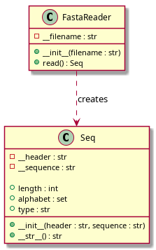

FASTA Sequence Reader
Описание проекта
Данный проект предназначен для чтения и анализа биологических последовательностей, записанных в формате FASTA.
Проект состоит из двух основных классов:
Seq— представляет отдельную биологическую последовательность;FastaReader— отвечает за чтение FASTA-файлов и получение отдельных объектовSeq.
Класс Seq хранит заголовок FASTA-записи и последовательность.
Он позволяет получить длину последовательности, её уникальный алфавит
и определить тип последовательности: нуклеотидная или белковая.
Класс FastaReader читает FASTA-файл последовательно и возвращает
отдельные объекты Seq. Использование генератора позволяет
обрабатывать большие файлы без необходимости загружать весь файл
в память одновременно.
Возможности программы
Программа позволяет:
читать последовательности из FASTA-файлов;
получать заголовок каждой FASTA-записи;
получать саму последовательность;
определять длину последовательности;
определять уникальный алфавит последовательности;
определять тип последовательности;
обрабатывать несколько последовательностей из одного файла;
работать с большими FASTA-файлами с использованием генератора.
UML-диаграмма
Диаграмма показывает структуру классов проекта и связь между
классами FastaReader и Seq.

Класс Seq
- class seq.Seq(header, sequence)
Класс для работы с биологическими последовательностями.
Хранит загловок FASTA-записи и последовательностью Позволяет получить длину последовательности, уникальный алфавит и определить тип последовательности
- property alphabet
Возвращает уникальный алфавит последовательности.
Returns
- set
Множество уникальных символов последовательности.
Класс FastaReader
- class fasta_reader.FastaReader(filename)
Класс для чтения файлов в формате FASTA.
Читает FASTA-файл по отдельным записям и возвращает объекты класса Seq
- read()
Читает FASTA-файл и возвращает записи по одной.
Каждая FASTA-запись преобразуется в объект класса Seq. Используется генератор, поэтому весь файл не загружается в пямять целиком.
Yeilds
- Seq
Объект последовательности из очередной FASTA-записи.
Raises
- ValueError
Если последовательность встречается без заголовка или заголовок не содержит в себе последовательности.
Запуск программы
Для запуска демонстрационной программы необходимо перейти
в каталог проекта 13-2 и выполнить:
python3 main.py
Демонстрационная программа использует FASTA-файл example.fasta,
содержащий примеры биологических последовательностей.
Пример работы
После запуска программа читает FASTA-файл и для каждой последовательности выводит её основные характеристики:
заголовок;
последовательность;
длину;
уникальный алфавит;
тип последовательности.
Пример результата:
>sp|P01308|INS_HUMAN Insulin
MALWMRLLPLLALLALWGPDPAAA...
Длина: 110
Алфавит: {'A', 'C', 'D', 'E', 'F', ...}
Тип: protein
Структура проекта
Основные файлы проекта:
13-2/
├── seq.py
├── fasta_reader.py
├── main.py
└── example.fasta
seq.py содержит класс Seq.
fasta_reader.py содержит класс FastaReader.
main.py является демонстрационной программой.
example.fasta содержит тестовые FASTA-последовательности.
Документация
Документация проекта создана с использованием Sphinx. HTML-версия документации собирается командой:
cd ~/13/docs
make html
После сборки HTML-файлы находятся в каталоге:
docs/build/html/
Обработка ошибок
Программа проверяет корректность FASTA-файла.
В случае обнаружения ошибки может быть вызвано исключение
ValueError с описанием проблемы.
Авторы
Eva Chernobaeva 3.2.33 <3
Версия проекта: 1.0